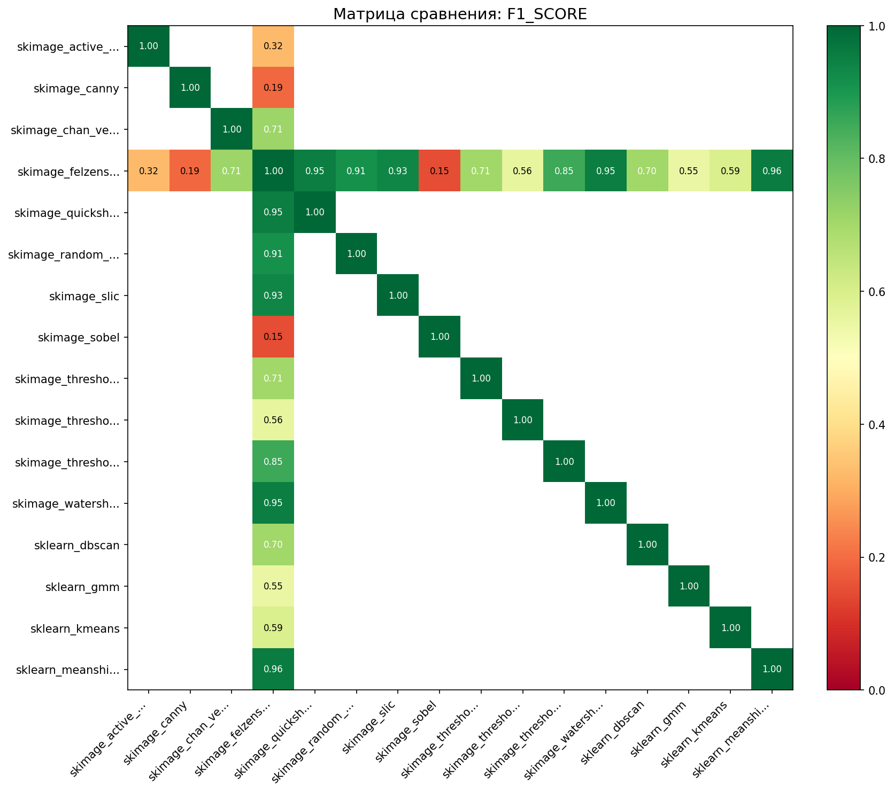
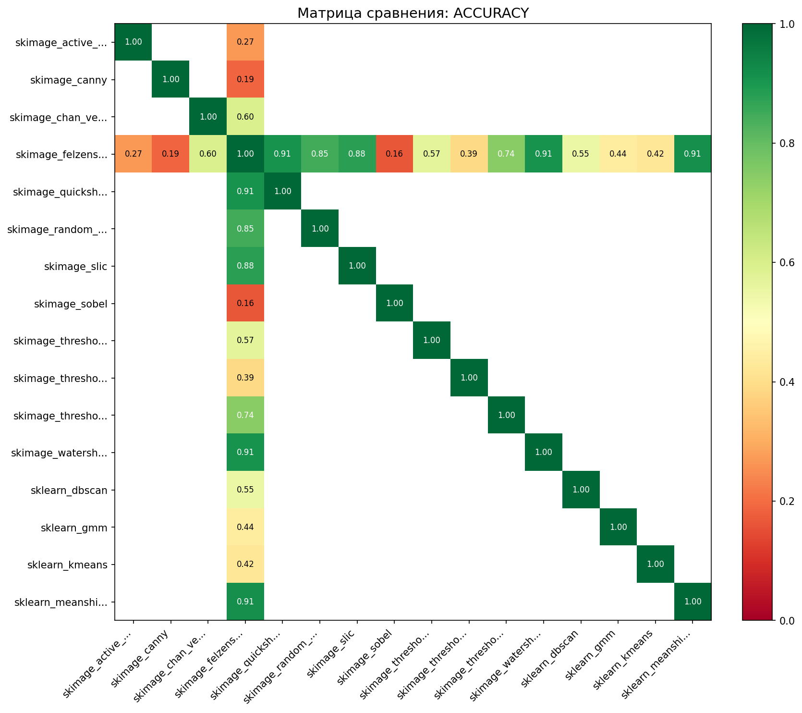
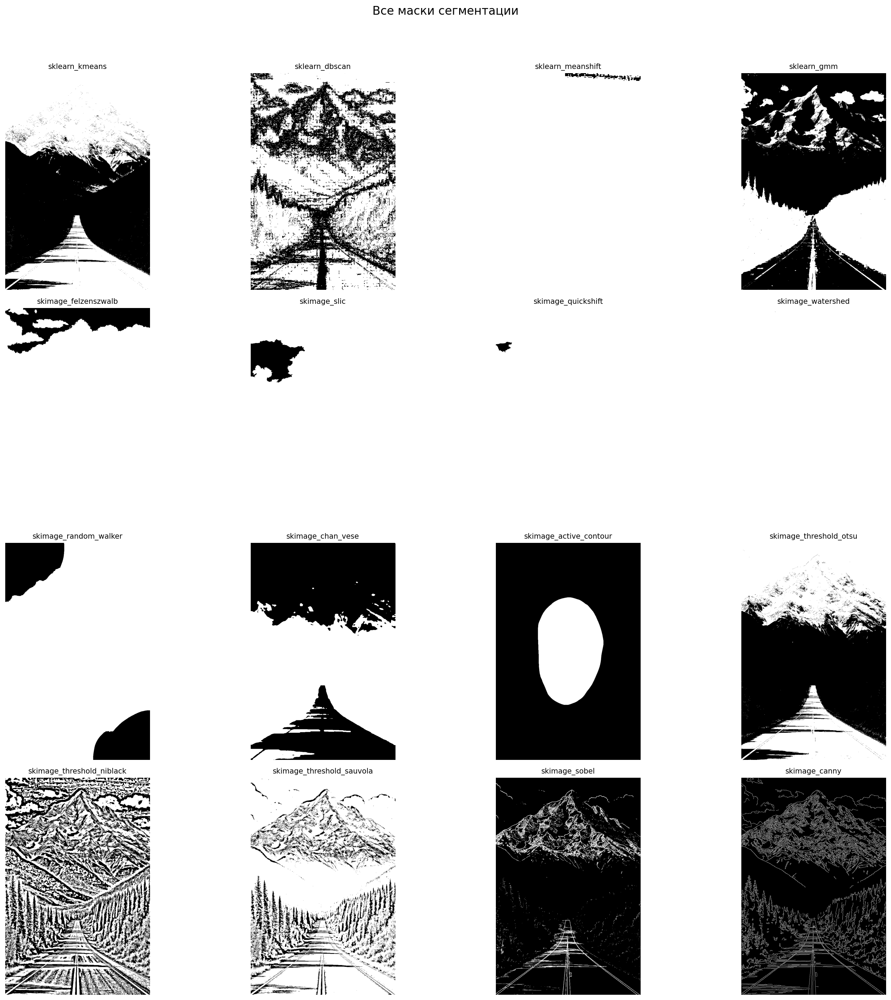

Дата: 2025-12-24 13:21:55
Всего методов: 16
Тип сравнения: all_vs_ref
Референсный метод: skimage_felzenszwalb



| method2 | f1_score |
|---|---|
| sklearn_meanshift | 0.955 |
| skimage_quickshift | 0.952 |
| skimage_watershed | 0.952 |
| skimage_slic | 0.935 |
| skimage_random_walker | 0.913 |
| Метод | Площадь маски | Покрытие | Время (с) |
|---|---|---|---|
| skimage_watershed | 812,542 | 100.0% | 0.180 |
| skimage_quickshift | 810,166 | 99.7% | 2.791 |
| sklearn_meanshift | 807,407 | 99.4% | 23.909 |
| skimage_slic | 777,130 | 95.6% | 0.422 |
| skimage_felzenszwalb | 738,025 | 90.8% | 0.622 |
| skimage_random_walker | 696,423 | 85.7% | 10.589 |
| skimage_threshold_sauvola | 676,201 | 83.2% | 0.020 |
| sklearn_dbscan | 507,264 | 62.4% | 0.840 |
| skimage_threshold_niblack | 456,624 | 56.2% | 0.021 |
| sklearn_kmeans | 418,030 | 51.4% | 0.232 |
| skimage_chan_vese | 409,638 | 50.4% | 3.838 |
| skimage_threshold_otsu | 390,862 | 48.1% | 0.002 |
| sklearn_gmm | 281,046 | 34.6% | 5.876 |
| skimage_active_contour | 143,095 | 17.6% | 0.268 |
| skimage_canny | 78,999 | 9.7% | 0.035 |
| skimage_sobel | 59,357 | 7.3% | 0.010 |